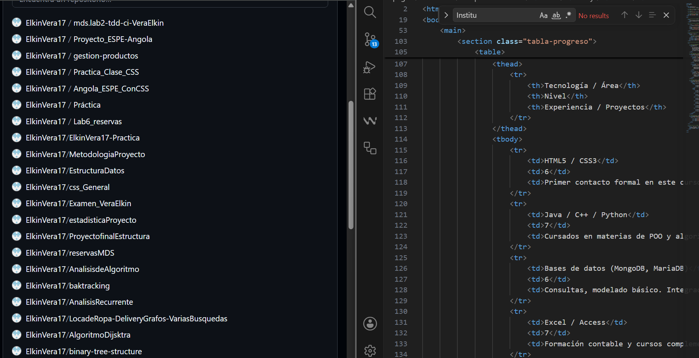
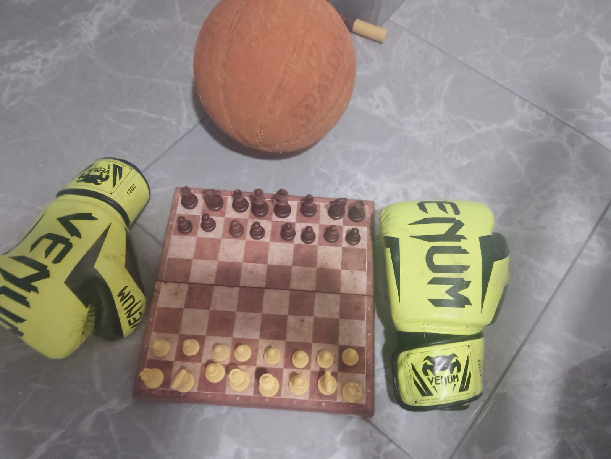

Formación contable
Bachiller en Contabilidad. Manejo de Excel (básico - intermedio), Access, principios contables y análisis financiero. Esta base me permite entender la lógica de los datos y los procesos estructurados.
De la contabilidad a la tecnología: perfil híbrido en crecimiento
Soy orgullosamente ecuatoriano, bachiller en contabilidad y actualmente me especializo en Ing. Tecnologías de la Información. Este portafolio muestra mi evolución academicadesde el mundo contable hacia el desarrollo web y la programación. Aunque mi primera experiencia formal en HTML/CSS es este curso, ya cuento con bases sólidas en Java, C++, Python, POO, bases de datos (MongoDB, MariaDB), Excel, Access y ciberseguridad. Mi objetivo es dominar JavaScript y React para convertirme en desarrollador full stack.
Bachiller en Contabilidad. Manejo de Excel (básico - intermedio), Access, principios contables y análisis financiero. Esta base me permite entender la lógica de los datos y los procesos estructurados.

Conocimientos en Java, C++, Python (POO, estructuras de datos). Manejo de bases de datos MongoDB y Modelado en Drawdb. Primeros pasos en HTML5, CSS3 y próximamente REACT y JavaScript.

Aunque soy algo tímido, me adapto rápido, aprendo con autonomía y soy muy responsable. Estrategia y analisis del ajedrez, trabajo en equipo y diciplina del fútbol y baloncesto, y constancia e ingenio de labores en la finca.
| Tecnología / Área | Nivel | Experiencia / Proyectos |
|---|---|---|
| HTML5 / CSS3 | 6/10 | Primer contacto formal en este curso. Maquetación semántica, formularios y tablas. |
| Java / C++ / Python | 7/10 | Cursados en materias de POO y algoritmos. Proyectos académicos básicos. |
| Bases de datos (MongoDB, MariaDB) | 6/10 | Consultas, modelado básico e integración con aplicaciones. |
| Excel / Access | 7/10 | Formación contable y cursos complementarios. |
| Ciberseguridad / Redes | 5/10 | Conceptos básicos e interés fuerte en redes. |
| JavaScript / React | 1/10 | Objetivo a corto plazo. Próximo a estudiar. |